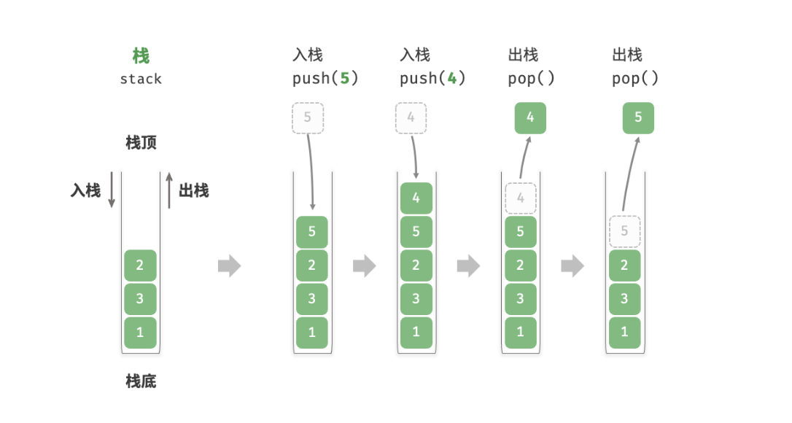
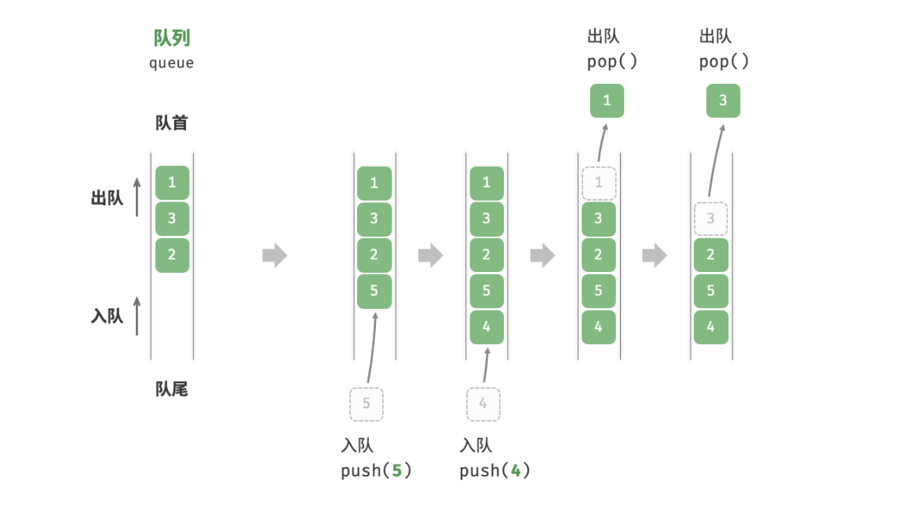
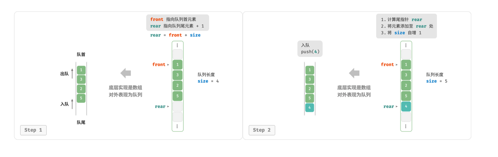
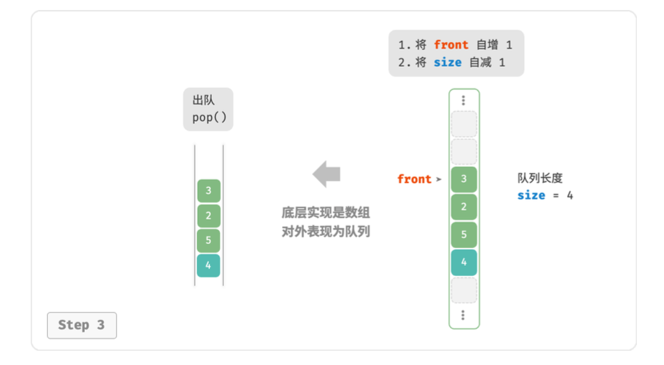
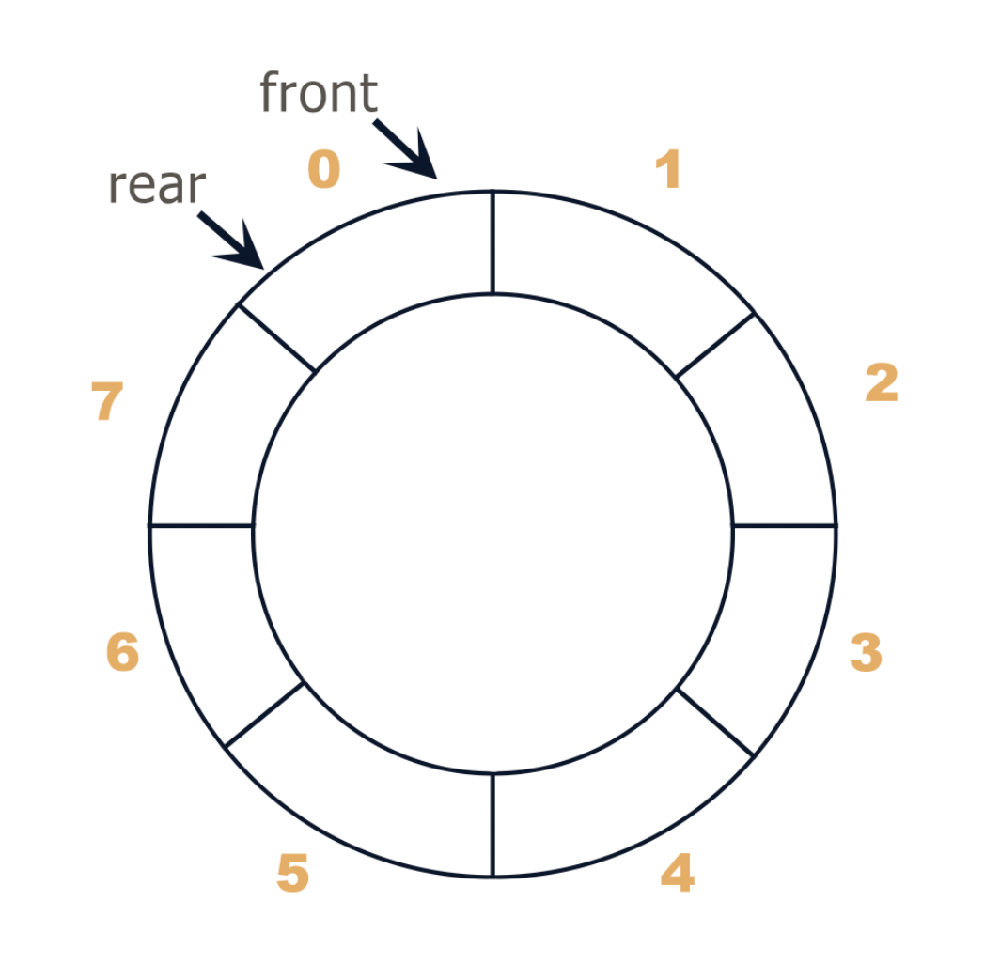
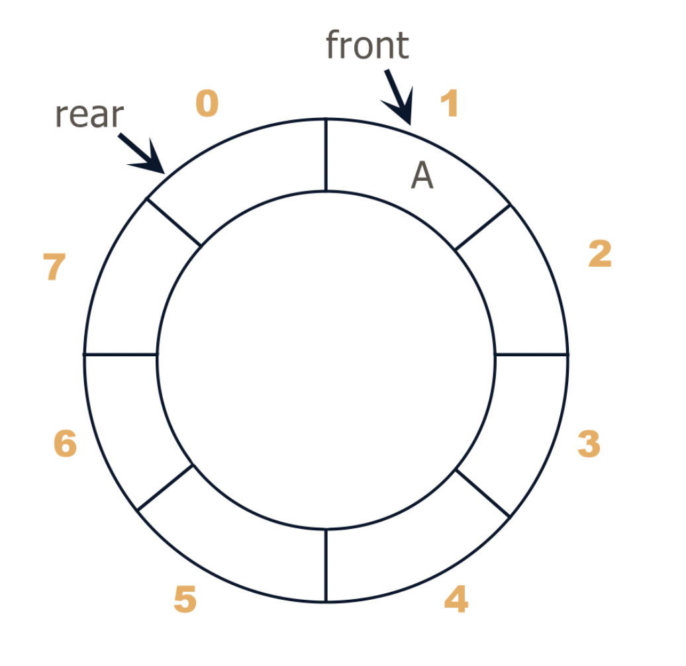
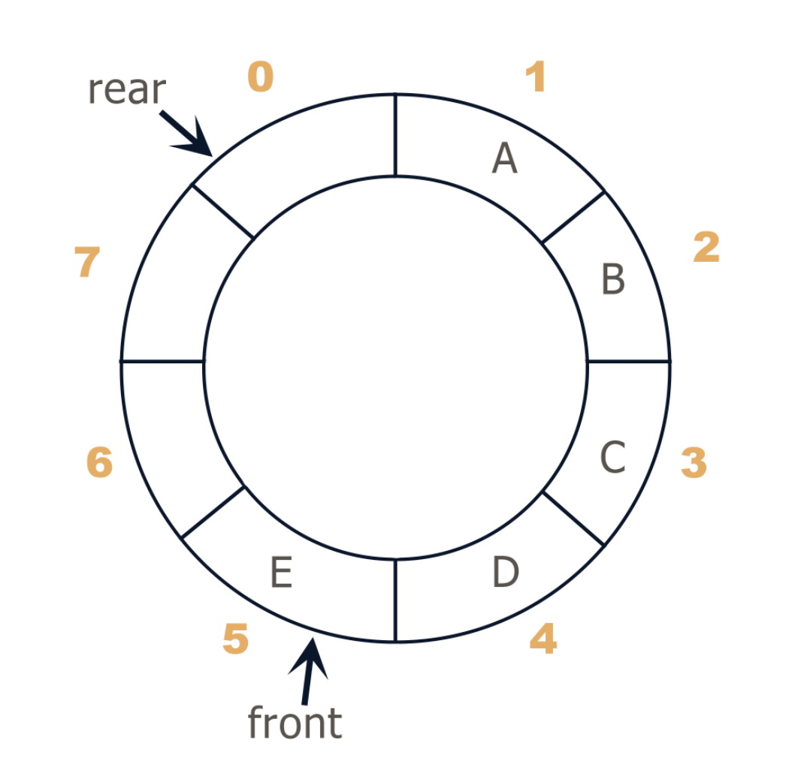
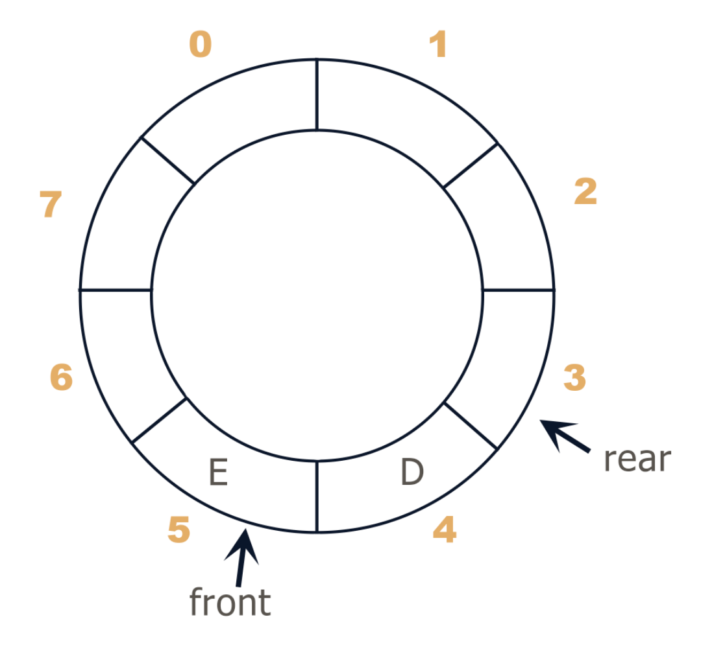
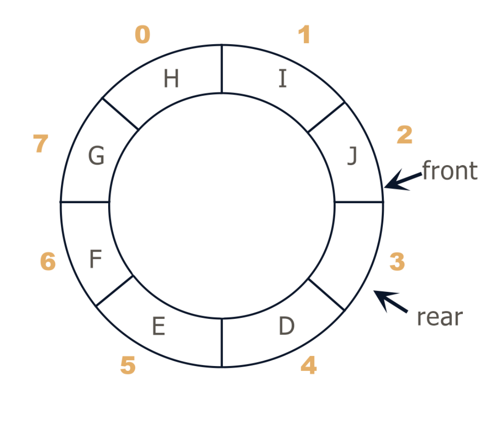
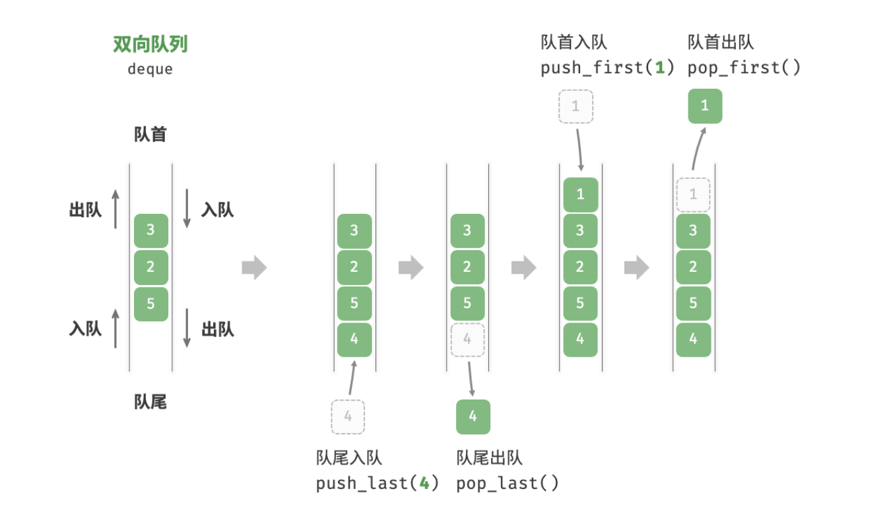

初识数据结构
数据结构( data structure )是计算机存储、组织数据的方式。数据结构是指相互之间存在一种或多种特定关系的数据元素的集合。通常情况下，精心选择的数据结构可以带来更高的运行或者存储效率。数据结构往往同高效的检索算法和索引技术有关。
学习数据结构的意义
在许多类型的程序的设计中，数据结构的选择是一个基本的设计考虑因素。许多大型系统的构造经验表明，系统实现的困难程度和系统构造的质量都严重地依赖于是否选择了最优的数据结构。许多时候，确定了数据结构后，算法就容易得到了。有些时候事情也会反过来，我们根据特定算法来选择数据结构与之适应。不论哪种情况，选择合适的数据结构都是非常重要的。所以大家需要多关注数据结构的知识点。
如何学习数据结构
我觉得入门学习算法与数据结构时应包含三个部分：
- 选择一本合适的书 十分推荐普林斯顿的这本书：算法 第四版，是我认为最适合拿来入门的。在书中淡化了算法分析和证明，强调了实现和应用，并且通过一些有趣的习题对比显示了优秀的算法与数据结构在时间和空间上的高效。
- 编程实现和应用 我曾使用的一个较笨的方法是尝试默写书本中的实现。另一种较有成就感的方法是在如 Leetcode 上，选择一些简单的但会使用到上述基础数据结构的题目，自己实现那些需要使用到的数据结构。同时，除了底层 coding，最好也从顶层宏观的去观察一种数据结构的各种操作。这里推荐一个动态可视化网站 Visualgo。
- 反复学习 因为算法与数据结构所涵盖的知识较多，所以一本书里的内容可能都需要分几个阶段去学习，难免会遗忘之前的内容。我建议敏捷学习，尽量快的往后学习。如果一个知识点实在不懂，可以存疑，“不求甚解”，很多时候经过后面的学习，前面的一些内容就自然明了。然后反复学习。
栈
栈(Stack)是一个数据集合，可以理解为只能在一端进行插入或删除得列表
栈的特点：后进先出 LIFO（last-in, first-out）
栈的概念：栈顶、栈底
栈的基本操作
| 方法名 | 描述 | 时间复杂度 |
|---|---|---|
| push() | 元素入队（添加至栈顶） | O(1) |
| pop() | 栈顶元素出栈 | O(1) |
| peek() | 访问栈顶元素 | O(1) |

栈的实现
使用一般的列表结构即可实现栈
- 进栈：
li.append - 出栈：
li.pop - 取栈顶：
li[-1]
基于数组实现
代码实现：array_stack.py
1 | class ArrayStack: |
时间效率
在基于数组的实现中，入栈和出栈操作都在预先分配好的连续内存中进行，具有很好的本地性，因此效率较高。然而，如果入栈时超出数组容量，会触发扩容机制，导致该次入栈操作的时间复杂度变为O(n)
在基于链表的实现中，链表的扩容非常灵活，不存在上述数组扩容时效率降低问题。但是，入栈操作需要初始化节点对象并修改指针，因此效率相对较低。不过，如果入栈元素本身就是节点对象，可以省去初始化步骤，从而提高效率
综上所述，当入栈与出栈操作的元素是基本数据类型时，例如 int 或 double ，我们可以得出以下结论。
- 基于数组：实现的栈在触发扩容时效率会降低，但由于扩容是低频操作，因此平均效率更高。
- 基于链表：实现的栈可以提供更加稳定的效率表现。
空间效率
在初始化列表时，系统会为列表分配“初始容量”，该容量可能超出实际需求；并且，扩容机制通常是按照特定倍率（例如 2 倍）进行扩容的，扩容后的容量也可能超出实际需求。因此，基于数组实现的栈可能造成一 定的空间浪费。
然而，由于链表节点需要额外存储指针，因此链表节点占用的空间相对较大。
综上，我们不能简单地确定哪种实现更加节省内存，需要针对具体情况进行分析。
栈的应用
浏览器中的后退与前进、软件中的撤销与反撤销。每当我们打开新的网页，浏览器就会对上一个网页执 行入栈，这样我们就可以通过后退操作回到上一个网页。后退操作实际上是在执行出栈。如果要同时支 持后退和前进，那么需要两个栈来配合实现。
程序内存管理。每次调用函数时，系统都会在栈顶添加一个栈帧，用于记录函数的上下文信息。在递归 函数中，向下递推阶段会不断执行入栈操作，而向上回溯阶段则会不断执行出栈操作。
括号匹配问题
给一个字符串，其中包括小括号、中括号、大括号，求该字符串中的括号是否匹配
例如：
- ()()[]{} 匹配
- ([{[]}]) 匹配
- []( 不匹配
- [(] 不匹配
思考：
括号都是成对出现的，所以我们可以让每一个左括号入栈。遇到同一种括号，左边括号出栈。
例如：([{[]}]), 左边的括号([{[全部压入栈中，而下一个括号是]，是同一种括号，把左边的括号[出栈。如果不是则报错
代码实现：brace_match.py
1 | import array_stack |
队列
队列（Queue）是一个数据集合，仅允许再列表的一端进行插入，另一端进行删除
进行插入的一端称为队尾（rear），插入的动作称为进队或入队
进行删除的一端称为队头（front），删除动作称为出队
队列的性质：先进先出（First-in, First-out）

队列的基本操作
| 方法名 | 描述 | 时间复杂度 |
|---|---|---|
| push() | 元素入队，即将元素添加至队尾 | O(1) |
| pop() | 队首元素出队 | O(1) |
| peek() | 访问队首元素 | O(1) |
队的实现
为了实现队列，我们需要一种数据结构，可以在一端添加元素，并在另一端删除元素，链表和数组都符合要求
queue.py
1 | from collections import deque |
基于数组的实现
在数组中删除首元素的时间复杂度为O(n)，因为删除数组的首元素，其他元素要全部向前挪动一个位置。这在数据量很大的情况下很费时间
那我们有没有什么方法让时间复杂度变成O(1)呢？
我们可以使用指针的方式，使用指针front指向元素队首，而使用指针rear指向队尾元素后一个位置，size为队列的长度，rear = front + size
即，数组中包含元素的有效区间为[front, rear - 1]
- 入队操作：将输入元素赋值给
rear索引处，并将size加1 - 出队操作：只需将
front加1，并将size减少1
可以看到，入队和出队操作都只需进行一次操作，时间复杂度均为O(1)


但是这种方式有一个问题：在不断地入队和出队过程中，front和rear都在向右移动，Python的列表会不断为其扩大长度，但是前面的空间根本没有使用到，造成了浪费。最后可能，5M的队列实际就用了1k的空间。
所以，我们可以使用环形队列的方式解决这个问题，将数组的首尾相连造就“环形数组”
最开始，rear和front指针都指向同一块空间，此时队列为空

当我们要将A入队时，需要把front指针向前挪动一个位置，即front+1

接着我们将B、C、D、E入队，front再向前挪动4个位置

当要出队时，需要将rear指针向前挪动，我们将A、B、C出队，即rear+3

现在我们再将F、G、H、I、J入库，不过现在有一个小问题，当前G处于下标7的位置，那我们怎么样再添加一个元素，让下标7加1而指向下标0呢？
当你发现加减乘除都不能让7加1变成0时，不妨试试取余数
我们的环形队列一共有8个空间，下标(7+1)%8正好为0，即可指向下标0
当我们把F、G、H、I、J都入队后，其实此时环形队列已经满了。但是你可以看见，还有一块没有用上。
因为无法判断队空还是队满，队空时front == rear，如果最后一块空间也被填上了，即队满时front == rear，所以我们需要牺牲一小块空间，即队满为front + 1 == rear

整个队列的入队和出队过程，就是头指针front和尾指针rear互相追赶的过程
环形队列的实现
- 环形队列：当队尾指针
rear == Maxsize - 1时，再前进一个位置就自动到0了 - 队首指针前进1：
front = (front + 1) % Maxsize - 队尾指针前进1：
rear = (rear + 1) % Maxsize - 队空条件：
rear = front - 队满条件：
(front + 1) % Maxsize == rear
代码实现：array_queue.py
1 | class ArrayQueue: |
双向队列
在单项队列中，我们仅能删除头部元素或在尾部添加元素，双向队列（double-ended queue）提供了更高的灵活性，允许在头部和尾部执行元素的添加或删除操作

| 方法名 | 描述 | 时间复杂度 |
|---|---|---|
| push_first() | 将元素添加至队首 | O(1) |
| push_last() | 将元素添加至队尾 | O(1) |
| pop_first() | 删除队首元素 | O(1) |
| pop_last() | 删除队尾元素 | O(1) |
| peek_first() | 访问队首元素 | O(1) |
| peek_last() | 访问队尾元素 | O(1) |
使用编程语言中已实现的双向队列类：
deque.py
1 | from collections import deque |
- 使用方法：
from collections import deque - 创建队列：
queue = deque() - 双向队列队尾进队：
append() - 双向队列队首出队：
popleft() - 双向队列队首进队：
appendleft() - 双向队列队尾出队：
pop()